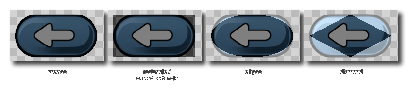
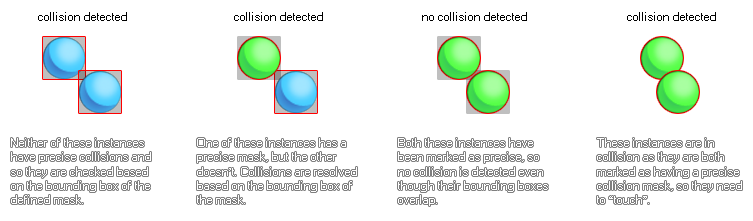

Im Sprite-Editor legen Sie die allgemeinen Eigenschaften für jede von Ihnen erstellte Sprite-Ressource fest. Sie können dieses Fenster öffnen, indem Sie ein neues Sprite erstellen (Rechtsklick)  Klicken Sie im Sprite-Ressourcenordner auf "Erstellen", und doppelklicken Sie auf
Klicken Sie im Sprite-Ressourcenordner auf "Erstellen", und doppelklicken Sie auf  auf einem vorhandenen Sprite oder durch Klicken mit der rechten Maustaste
auf einem vorhandenen Sprite oder durch Klicken mit der rechten Maustaste  ein vorhandenes Sprite und wählen Sie "Eigenschaften". Die Bestandteile des Sprite-Editors lauten wie folgt:
ein vorhandenes Sprite und wählen Sie "Eigenschaften". Die Bestandteile des Sprite-Editors lauten wie folgt:
Hier kannst du das Sprite benennen. Der Name des Sprites wird im gesamten Spielprojekt verwendet, um das Sprite als Ressource zu identifizieren. Es kann nur alphanumerisch sein und darf nur das Unterstrichsymbol "_" verwenden. Während Sie im Sprites-Namen Zahlen verwenden können, darf der Name nicht mit einer Zahl beginnen, da er bei Verwendung von GML oder DnD™ zu einem ungültigen Ressourcennamen werden würde.
In diesem Abschnitt können Sie die Bildgröße festlegen, indem Sie auf die Schaltfläche Sprite-Größe klicken
. Das folgende Fenster wird geöffnet:
Hier sehen Sie eine Vorschau des Sprites vor und nach dem Anwenden der ausgewählten Transformationen. Der folgende Abschnitt dient zum Festlegen der neuen Sprite-Eigenschaften und ist in zwei Teile unterteilt:
- Bild skalieren: Mit dieser Option können Sie die Größe des Sprite-Zeichenbereichs ändern und alle im Sprite enthaltenen Bilder werden gestreckt und auf die neue Größe skaliert. Sie können das Seitenverhältnis des Basisbilds skalieren und beibehalten, und Sie können auch auswählen, ob Sie in Pixel oder in Prozent skalieren möchten. Abhängig von der Art des Bildes, mit dem Sie arbeiten, möchten Sie möglicherweise auch die lineare Interpolation aktivieren oder nicht (im Allgemeinen werden durch die lineare Interpolation die Pixel über einen Bereich "geglättet", weshalb sie für Pixelbilder am besten aufgehoben werden).
- Leinwandgröße ändern: Mit dieser Option wird die Zeichenfläche auf die neue Größe angepasst, ohne den Inhalt zu skalieren. Sie können den Ankerpunkt für die Größenänderung mithilfe der Richtungspfeile festlegen und dann den Größenwert festlegen. Es gibt eine Option, um das Seitenverhältnis beizubehalten, wenn Sie die Größe der Leinwand ändern. Unten können Sie festlegen, ob die Werte für die Größe entweder in Pixel oder in Prozent angegeben werden.
Wenn Sie mit der neuen Größe zufrieden sind, können Sie auf Anwenden klicken, um die Änderungen zu übernehmen und das Fenster für die Größenänderung zu schließen.
ANMERKUNG: Diese Option ist nur für Bitmap-Sprites verfügbar und wird für SWF- oder Skelett-Animationssprites ausgegraut.In diesem Bereich können Sie entweder auch öffnen Image Editor auf Ihrem Sprite zu zeichnen, oder Sie können auf die Schaltfläche „Importieren“ klicken, um ein zuvor erstelltes Sprite zu importieren. Sprites können aus den meisten gängigen Bitmap-Formaten importiert werden ( PNG. JPG. GIF, etc...) aber GameMaker Studio 2 unterstützt auch Vektor-Sprites (SWF) und Skelettanimations-Sprites (Spine). Weitere Informationen zu diesen Formaten finden Sie im Abschnitt zum Importieren von Nicht-Bitmap-Sprites. Beachten Sie, dass Sie beim Importieren von Bitmap-Sprites mehrere Bilddateien im Dateiexplorer auswählen können. Jede dieser Dateien wird demselben Sprite als separate Unterbilder (Frames) hinzugefügt.
In diesem Abschnitt des Sprite-Eigenschaftenfensters wird beschrieben, wie GameMaker Studio 2 die Bilder Ihres Sprites auf Textur-Seiten speichert, um sie mit Geräten und Browsern zu verwenden. Für Desktop-Plattformen ist dies normalerweise nicht zu wichtig, aber wenn Sie mit der Entwicklung für Mobilgeräte oder das Web beginnen, wird die korrekte Verwaltung Ihrer Bildressourcen (Texturen) sehr wichtig, da schlecht verwaltete Texturen das Spiel beeinträchtigen und zu Leistungsproblemen führen können.
Die Kontrollkästchen " Kachel": "Horizontal" und " Kachel: Vertikal" sind standardmäßig nicht aktiviert, da Sie die Sprites meistens nicht kacheln möchten. Unter bestimmten Umständen können Sie jedoch eine Kachelung wünschen, was bedeutet, dass Sie diese Optionen aktivieren sollten, insbesondere wenn Sie die Ansicht oder den Raum skalieren, da durch die Skalierung Artefakte in die Grafiken eines Spiels eingefügt werden können, wenn die Textur-Seite nicht generiert wird richtig.
Wenn Ihr Sprite als Textur-Map verwendet werden soll, aktivieren Sie das Kontrollkästchen Separate Textur-Seite, und das Sprite erhält eine eigene Textur-Seite. Beachten Sie, dass jedes Unterbild auch eine eigene Textur-Seite erhält. Wenn Ihr Sprite 10 Bilder enthält, werden 10 Textur-Seiten generiert. Dies erhöht den Texturspeicherbedarf Ihres Spiels enorm und muss daher mit größter Sorgfalt angewendet werden. Beachten Sie außerdem, dass im Allgemeinen, wenn Ihr Sprite diese Option für 3D verwendet, die Texturen eine Potenz von 2 sein sollten (dh> 128x128, 256x256, 512x512 usw.).
Als Nächstes können Sie die Texturgruppe auswählen, zu der die Sprite-Ressource gehören soll. Grundsätzlich können Sie eine Texturgruppe (zuvor im Texture Group Manager definiert ) so einrichten, dass alle Bildressourcen, die Sie für bestimmte Räume oder Spielebenen benötigen, gemeinsam gespeichert werden können. So können Sie beispielsweise alle Ihre Level-1-Bilder in einer Texturgruppe, alle Ihre Level-2-Bilder in einer anderen usw. haben, und GameMaker Studio 2 versucht, alle diese gruppierten Ressourcen auf derselben Textur-Seite zu platzieren, um die Textur-Seite zu reduzieren tauschen, während das Spiel auf der ausgewählten Zielplattform ausgeführt wird.
ANMERKUNG: Dies ist möglicherweise nicht immer erforderlich, und die Leistungssteigerung dieser Methode hängt davon ab, ob das Zielgerät CPU-gebunden oder GPU-gebunden ist.
Mehr über Textur-Seiten erfahren Sie hier.Die nächste Option besteht darin, das vorvervielfachte Alpha für die Sprite-Bilder zu aktivieren. Wenn diese Option aktiviert ist, wird das Alpha aller Unterbilder des Sprites vormultipliziert. Dies ist normalerweise nur beim Zeichnen von Sprites auf Oberflächen oder bei bestimmten Spezialeffekten erforderlich. Bei normalem Sprite-Einsatz sollten Sie keinen erkennbaren Unterschied zwischen dem normalen und dem vormultiplizierten Sprite feststellen.
Endlich haben wir Kantenfilterung. Diese Option ist speziell für den Fall vorgesehen, dass die lineare Interpolation für Ihr Spiel aktiviert ist und Sie um Ihre Sprites herum Farbhöhen sehen. Dies wird durch die Hardware verursacht, die von mehreren Quelltexteln auf der Textur-Seite gleichzeitig interpoliert wird. Dies kann besonders offensichtlich sein, wenn Sie die Auflösung Ihrer Spiele erhöhen. Wenn Sie diese Option aktivieren, werden die Kantenpixel so gefiltert, dass sie die Farbe des nächstgelegenen vollständigen Alpha-Sprite-Pixels annehmen und die interpolierten Pixel ohne den zuvor vorhandenen Halo überblenden.
Alle Sprites verfügen über eine Kollisionsmaske, die der Fläche des Sprites entspricht, die zur Erkennung von Kollisionen verwendet wird, wenn das Sprite einer Instanz zugewiesen wird. Sie können zunächst den Modus für die Kollisionsmaske einstellen. Dies kann eine der folgenden sein:
Neben dem Kollisionsmaskenmodus gibt es auch verschiedene Arten von Kollisionsmasken, die Sie aus dem Dropdown-Menü auswählen können:
- Automatisch: GameMaker Studio 2 berechnet die Kollisionsmaske automatisch basierend auf den Sprite-Alpha-Werten (dies hängt von der Toleranzeinstellung ab, die unten erläutert wird).
- Vollbild: Die Maske wird so berechnet, dass ihre Grenzen den linken, rechten, oberen und unteren Grenzen des Sprites entsprechen.
- Manuell: Wenn Sie diese Option auswählen, möchten Sie die Grenzen der Kollisionsmaske mithilfe der Eingabewerte für links, rechts, oben und unten festlegen.
Das folgende Bild zeigt die verschiedenen Maskenoptionen:
- Rechteck: Eine einfache rechteckige Kollisionsmaske. Dies ist die schnellste Lösung, wenn es in Ihrem Projekt verwendet wird.
- Rotiertes Rechteck: Dies ist eine einfache rechteckige Kollisionsmaske, die sich zusammen mit der Maus drehen wird image_angle Wert der Instanz mit zugewiesenem Sprite. Dies ist langsamer als die normale rechteckige Kollisionsmaske, aber schneller als eine präzise Kollisionsmaske.
- Ellipse: Erzeugt eine elliptische Kollisionsmaske. Dies ist langsamer zu lösen.
- Diamant: Erzeugt eine "Diamant" -Kollisionsmaske. Dies ist langsamer zu lösen und erzeugt mehr CPU-Aufwand.
- Präzise: Dadurch wird eine präzise Kollisionsmaske erstellt, die auf der Kontur des Sprites basiert. Wenn das Sprite mehrere Unterbilder hat, wird dies aus den Kanten aller übereinander platzierten Unterbilder zusammengesetzt. Beachten Sie, dass die genaue Maske auf das Begrenzungsfeld gekürzt wird, wenn der Modus auf Manuell eingestellt ist und Sie die Standardwerte ändern. Dies ist sehr langsam und verursacht viel CPU-Aufwand.
- Präzise (pro Frame): Dadurch wird eine präzise Kollisionsmaske pro Frame erstellt (dh die Maske ändert sich entsprechend der Kontur jedes einzelnen Frames). Beachten Sie, dass die genaue Maske auf das Begrenzungsfeld gekürzt wird, wenn der Modus auf Manuell eingestellt ist und Sie die Standardwerte ändern. Dies ist bei weitem die langsamste Art der Kollisionsmaske, die aufzulösen ist, und sollte außer in sehr, sehr spezifischen und seltenen Fällen vermieden werden Fälle.

Die Optionen für die Kollisionsprüfung sind für Ihr Spiel sehr wichtig, da sie direkt Einfluss auf die Interaktion Ihrer Objekte und die Ausführung Ihres Spiels haben. Die falschen Einstellungen wirken sich sogar negativ auf die Gesamtleistung aus. Warum das? Immer wenn sich zwei Instanzen treffen und beide Instanzen über eine gültige Maske verfügen, wird ein Kollisionsereignis erzeugt, indem die Überlappung der Maske geprüft wird, die entweder genau sein kann oder nicht und an den Bildindex angepasst ist oder nicht. Unten ist ein Bild, um dies zu veranschaulichen:

Darunter befindet sich der Alpha-Toleranz- Schieberegler, der die Toleranz für das Erstellen der Maske in Bezug auf die Transparenz der Sprites-Pixel angibt. Pixel mit einer höheren Toleranz werden teilweise transparent, und die Maske wird mit einer geringeren Toleranz außerhalb der Maske gelassen berücksichtigt diese Pixel. Dies beeinflusst sowohl den Begrenzungsrahmen (wenn nicht manuell eingestellt) als auch die Maske zur genauen Kollisionsprüfung.
Schließlich können Sie die Begrenzungsrahmengrenzwerte für die Maske festlegen. Der Begrenzungsrahmen ist der Name, der dem rechteckigen Bereich zugewiesen wird, in den die Sprite-Maske passt. Nur Pixel innerhalb des Begrenzungsrahmens werden für die Maske verwendet und an der Kollisionsprüfung beteiligt. Standardmäßig wird diese automatisch berechnet, wobei die Alphatoleranz berücksichtigt wird Konto. Wenn Sie "präzise (pro Frame)" aktiviert haben, wird dies auch für jedes Teilbild separat sein. Wenn Sie es selbst einstellen, können Sie die Werte in die Felder für links, rechts oben und unten eingeben oder klicken
Klicken Sie in der Sprite-Ansicht auf das Sprite, um es zu "zeichnen". Beachten Sie, dass beim "Zeichnen" des Begrenzungsrahmens die Maske automatisch so generiert wird, dass sie in die Endwerte passt.
Wenn Sie zum Vorschaufenster wechseln, können Sie die Kollisionsmaske mithilfe der in jeder Ecke vorhandenen "Ziehpunkte" anpassen. Wenn Sie diese anklicken und ziehen, wird die Kollisionsmaske genauso angepasst wie bei der Eingabe von Werten für den Begrenzungsrahmen.
Die obere Leiste des Sprite-Editors enthält die Sprite-Ursprungseigenschaften und die Zoomsteuerelemente für das Vorschaufenster. Hier können Sie die Breite und Höhe des Sprites anzeigen sowie den Ursprung festlegen. Dies ist der Punkt im Sprite, der seiner Position im Raum entspricht. Wenn Sie also eine Instanz an einer bestimmten x / y-Position erstellen, wird der Ursprung des Sprites dort platziert. Standardmäßig ist dies die obere linke Ecke des Sprites, aber es ist oft bequemer, die Mitte zu verwenden, oder Sie möchten vielleicht eine andere Position verwenden, um zu klicken
Oben rechts befinden sich die Zoomsteuerelemente, mit denen Sie das Vorschaubild nach Bedarf vergrößern oder verkleinern können. Drücke den
Symbol, um das Bild 1: 1 mit den tatsächlichen Pixeln zu machen.
Das Sprite-Vorschaufenster zeigt das Sprite so, wie es im Spiel aussehen wird, und kann mit dem Mausrad vergrößert oder verkleinert werden
und mit dem
+
Dieser Teil des Sprite-Editors zeigt die verschiedenen Frames, die ein einzelnes Sprite bilden. Sie können klicken
in der oberen Ecke, und Sie können darauf klicken, um den Frame aus dem Sprite zu entfernen. Sie können auch klicken
/
+
Mit den Bildsteuerelementen können Sie die Animation der Bilder im Vorschaufenster wiedergeben. Die Wiedergabeschaltfläche startet / stoppt die Animation und die Wiederholungsschaltfläche
wird verwendet, um festzulegen, ob die Sprite-Schleifen (geht zurück zu Bild 1, wenn das letzte Bild erreicht ist) oder Ping-Pongs
(geht durch die Frames zurück, wenn das letzte Frame erreicht ist) und Sie können die Geschwindigkeit einstellen, mit der sie vom linken Eingabefeld aus abgespielt werden sollen. Die Frame-Geschwindigkeit kann entweder auf "Frames pro Sekunde" oder "Frames pro Spielframe" basieren. Die Gesamtzahl der verfügbaren Frames wird auf der rechten Seite zusammen mit dem aktuell ausgewählten Frame angezeigt. Sie können mehrere Frames auswählen, mit denen Sie Frames auswählen können